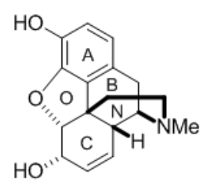
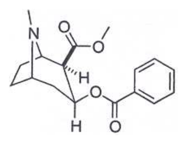
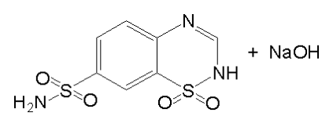

104 年第 2 次藥師藥理學與藥物化學試題與答案
這一頁是民國 104 年第 2 次藥師藥理學與藥物化學的整份歷屆試題，共 80 題，題目與標準答案出自考選部「國家考試試題及測驗式試題答案」開放資料。以下逐題列出題幹、選項與答案；要計時作答或記錄成績，請用線上練習。
考選部原始場次代碼：104090
線上作答這一科 →
全部 80 題
第 1 題
下列各藥物，何者在血中最不易與脂蛋白（Lipoprotein）結合？
- （A）amphotericin B
- （B）cyclosporin
- （C）streptomycin
- （D）tacrolimus
答案：（C）
第 2 題
Diazepam（pKa=3）為一弱鹼，其在小腸中（pH=8.0）分子態與離子態的比值為：
- （A）100000
- （B）1000
- （C）0.001
- （D）0.00001
答案：（A）
第 3 題
下列有關potency與efficacy的敘述，何者最正確？
- （A）一藥物之potency比其efficacy重要
- （B）potency與藥物-受體間的親和力較有關
- （C）efficacy與藥物-受體間的親和力較有關
- （D）potency與藥物的intrinsic activity較有關
答案：（B）
第 4 題
下列何種Cephalosporins為大多數手術前首選之預防性抗生素？
- （A）Cefazolin
- （B）Ceftazidime
- （C）Ceftriaxone
- （D）Cephalexin
答案：（A）
第 5 題
下列何種抗生素之脂溶性最大，最易通過血腦障壁治療腦膜炎？
- （A）Amikacin
- （B）Ceftriaxone
- （C）Erythromycin
- （D）Gentamicin
答案：（B）
第 6 題
下列何種抗癌藥物對細胞週期S期具有專一性抑制作用？
- （A）Cisplatin
- （B）Methotrexate
- （C）Paclitaxel
- （D）Vincristine
答案：（B）
第 7 題
有關Clavulanate之敘述，下列何者正確？
- （A）為Macrolides類抗生素
- （B）可抑制所有菌種所產生之β-lactamases
- （C）抗菌作用強
- （D）可以增強ticarcillin之藥效
答案：（D）
第 8 題
有一AIDS患者正在服用Zidovudine，若再服用何種藥物將會促進anemia及neutropenia之副 作用？
- （A）Acyclovir
- （B）Amantadine
- （C）Ganciclovir
- （D）Stavudine
答案：（C）
第 9 題
下列有關carmustine的敘述，何者錯誤？
- （A）臨床上有口服與靜脈注射之劑型
- （B）會引起噁心、嘔吐的副作用
- （C）可通過血腦障壁用於治療腦癌
- （D）是一種antimetabolite的抗癌藥
本題送分，無標準答案
第 10 題
下列何種藥物主要經肝臟代謝？
- （A）chloramphenicol
- （B）cephalosporin
- （C）penicillin
- （D）vancomycin
答案：（A）
第 11 題
Sargramostim之臨床用途為何？
- （A）血小板減少症
- （B）巨母細胞性貧血
- （C）慢性腎衰竭引起之貧血
- （D）化學治療引起嗜中性白血球減少症
答案：（D）
第 12 題
下列何藥用於促進血栓溶解？①Aprotinin ②Reteplase
- （A）僅①對
- （B）僅②對
- （C）①②均對
- （D）①②均錯
答案：（B）
第 13 題
下列何藥會增加深部靜脈栓塞之危險性？
- （A）azathioprine
- （B）cyclosporine
- （C）etanercept
- （D）thalidomide
答案：（D）
第 14 題
下列何者為糖尿病治療用藥Pramlintide之作用機轉？
- （A）可抑制glucagon釋放
- （B）可促進insulin釋放
- （C）可抑制肝臟生成glucose
- （D）可促進細胞對insulin之敏感度
答案：（A）
第 15 題
下列何者口服無效？
- （A）Methestrol
- （B）Dienestral
- （C）Estradiol
- （D）Diethylstibestrol
答案：（C）
第 16 題
下列何種抗高血壓藥物具有直接活化鉀離子通道的特性？
- （A）Fenoldopam
- （B）Atenolol
- （C）Diazoxide
- （D）Diltiazem
答案：（C）
第 17 題
服用下列何種藥品會有感覺異常、嘔吐及高血氯之酸中毒的副作用？
- （A）Amiloride
- （B）Furosemide
- （C）Acetazolamide
- （D）Hydrochlorothiazide
答案：（C）
第 18 題
下列治療心衰竭藥物，何者長期使用可能會產生類紅斑性狼瘡（lupus-like syndrome）之副 作用？
- （A）captopril
- （B）dobutamine
- （C）hydralazine
- （D）nitroprusside
答案：（C）
第 19 題
下列何種利尿劑會產生男性女乳症（gynecomastia）之副作用？
- （A）acetazolamide
- （B）bumetanide
- （C）metolazone
- （D）spironolactone
答案：（D）
第 20 題
有關於硝基化合物（Nitrite）使用後對心臟或血流影響，下列敘述何者錯誤？
- （A）使心室體積減少
- （B）因反射性心跳加快，可能使心肌耗氧量增加
- （C）可能改善側枝循環而使缺血心臟區域血流量增加
- （D）因反射性交感神經興奮，使心室舒張壓增加
答案：（D）
第 21 題
下列那一種降血壓藥物藥效較短，主要是使小動脈擴張而最適用於急性高血壓病人？
- （A）Losartan
- （B）Doxazosin
- （C）Atenolol
- （D）Hydralazine
答案：（D）
第 22 題
下列何者屬於保鉀利尿劑（potassium sparing agent）？
- （A）Hydrochlorothiazide
- （B）Ethacrynic acid
- （C）Spironolactone
- （D）Furosemide
答案：（C）
第 23 題
按照美國心臟學會（AHA）分級，第IV級心衰竭病人最適合使用下列那一種藥物？
- （A）Enalapril
- （B）Verapamil
- （C）Prazosin
- （D）Atenolol
答案：（A）
第 24 題
下列關於Vasopressin之敘述何者錯誤？
- （A）又稱為抗利尿激素（ADH）
- （B）臨床上可用於治療pituitary diabetes insipidus
- （C）有降血壓作用
- （D）為含9個胺基酸的胜肽由腦下垂體後葉（posterior pituitary）釋出
答案：（C）
第 25 題
下列何者可阻斷小劑量多巴胺（dopamine）所引起的腎血流增加？
- （A）Terazosin
- （B）Prazosin
- （C）Metoprolol
- （D）Haloperidol
答案：（D）
第 26 題
過敏性休克的首選藥物為何？
- （A）Isoproterenol
- （B）Epinephrine
- （C）Norepinephrine
- （D）Phenylephrine
答案：（B）
第 27 題
下列何種antimuscarinic drug可以快速且完全地分布到中樞神經系統？
- （A）Propantheline
- （B）Scopolamine
- （C）Ipratropium
- （D）Glycopyrrolate
答案：（B）
第 28 題
下列何種止瀉藥物屬於不會通過血腦障壁（blood-brain barrier）之opioid agonist ？
- （A）Tegaserod
- （B）Cholestyramine
- （C）Loperamide
- （D）Octreotide
答案：（C）
第 29 題
美華正在服用diazepam治療睡眠問題，但需要同時治療胃潰瘍，下列何者最不適宜併用？
- （A）Cimetidine
- （B）Ranitidine
- （C）Nizatidine
- （D）Famotidine
答案：（A）
第 30 題
治療偏頭痛（migraine）之藥物Sumatriptan是作用於下列何種受體？
- （A）5-HT1A
- （B）5-HT1D
- （C）5-HT1E
- （D）5-HT1F
答案：（B）
第 31 題
有關Febuxostat之敘述，下列何者錯誤？
- （A）為慢性痛風用藥
- （B）為黃嘌呤氧化酶抑制劑（xanthine oxidase inhibitor）
- （C）其結構與allopurinol類似，皆會受黃嘌呤氧化酶之代謝
- （D）可用於無法耐受allopurinol之痛風患者
答案：（C）
第 32 題
下列抗癲癇藥物何者最適用於癲癇重積症（status epileptics）？
- （A）Diazepam
- （B）Ethosuximide
- （C）Tiagabine
- （D）Lamotrigine
答案：（A）
第 33 題
下列何種藥物不能用於治療帕金森氏症（parkinsonism）？
- （A）Levodopa
- （B）Biperiden
- （C）Trihexyphenidyl
- （D）Pyridostigmine
答案：（D）
第 34 題
具有良好穿透性和血管收縮作用，廣泛應用於耳、鼻喉科的局部麻醉劑為何？
- （A）Lidocaine
- （B）Benzocaine
- （C）Bupivacaine
- （D）Cocaine
答案：（D）
第 35 題
下列那一種Benzodiazepine類的鎮靜－催眠（sedative-hypnotic）用藥必需先在體內代謝成 活性成分，才會產生其藥理作用？
- （A）Diazepam
- （B）Oxazepam
- （C）Lorazepam
- （D）Clorazepate
答案：（D）
第 36 題
下列那一種鎮靜安眠藥物為時下青少年普遍所濫用之藥物，俗稱“FM2”
- （A）Flurazepam
- （B）Flunitrazepam
- （C）Diazepam
- （D）Triazolam
答案：（B）
第 37 題
使用下列何者最可能產生氟離子（fluoride）造成的腎毒性？
- （A）Desflurane
- （B）Halothane
- （C）Nitrous oxide
- （D）Methoxyflurane
答案：（D）
第 38 題
下列有關帕金森氏症震顫（tremor）的敘述，何者正確？
- （A）發生於休息靜止時，活化乙型交感神經受體會降低其發生
- （B）發生於休息靜止時，bromocriptine會增加其發生的機率
- （C）發生於意向性運動時，levodopa會增加其發生的機率
- （D）發生於休息靜止時，benztropine具有減少其發生的作用
答案：（D）
第 39 題
長期使用phenytoin時會產生軟骨症（Osteomalacia），係由於下列那一種維生素代謝異常所 造成的？
- （A）Vitamin B12
- （B）Vitamin D
- （C）Vitamin B6
- （D）Vitamin E
答案：（B）
第 40 題
有關Prednisone的敘述，下列何者正確？
- （A）持續使用並不會增加IgG的分解速率
- （B）抑制腎、肝或心臟移植後的排斥作用
- （C）不具抗發炎作用
- （D）不會抑制腎上腺的功能
答案：（B）
第 41 題
下列何種藥物不是經由COMT代謝？
- （A）Dobutamine
- （B）Isoproterenol
- （C）Norepinephrine
- （D）Terbutaline
答案：（D）
第 42 題
下列何種藥物是經代謝成自由基（free radical）中間體而表現肝毒性？
- （A）Ethinylestradiol
- （B）Furosemide
- （C）Isoniazid
- （D）Pioglitazone
答案：（C）
第 43 題
在正常生理情況下，何者屬於中性化合物？
- （A）Methylamine
- （B）Aniline
- （C）Diphenylamine
- （D）Pyridine
答案：（C）
第 44 題
LogP＝Σπ (fragments)，其中P代表分配係數，π代表hydrophilic-lipophilic values。藥物分 子每增加一個phenyl group，則π值增加多少？
- （A）0.5
- （B）1.0
- （C）1.5
- （D）2.0
答案：（D）
第 45 題
下列何者可視為CH2N2之等價異構物？
- （A）CH3OH
- （B）CH2CO
- （C）CH2CH2
- （D）CH2NOH
答案：（B）
第 46 題
G-Protein-coupled receptors（GPCRs）屬於下列何種transmembrane（TM）domain之構 造？
- （A）1-TM
- （B）2-TM
- （C）4-TM
- （D）7-TM
答案：（D）
第 47 題
下列何種藥物會代謝成monoethylglycinexylidide而具有中樞毒性？
- （A）Benzocaine
- （B）Lidocaine
- （C）Mepivacaine
- （D）Tocainide
答案：（B）
第 48 題
下列有關parathion之敘述，何者正確？
- （A）具有carbamate結構
- （B）為paraoxon之代謝物
- （C）屬於irreversible acetylcholinesterase inhibitor
- （D）毒性比paraoxon強
答案：（C）
第 49 題
Dipivefrin係下列那一種catecholamine與pivalic acid所形成之酯類？
- （A）Norepinephrine
- （B）Epinephrine
- （C）Isoproterenol
- （D）Dopamine
答案：（B）
第 50 題
下圖結構中，何者為 pentazocine所具有的部分結構？

- （A）ABC環
- （B）ABN環
- （C）ACN環
- （D）ANO環
答案：（B）
第 51 題
下列何者不是morphine的主要代謝途徑？
- （A）N-Demethylation
- （B）O-Demethylation
- （C）3-Glucuronidation
- （D）6-Glucuronidation
答案：（B）
第 52 題
下列何者不是兩性化合物？
- （A）Baclofen
- （B）Meperidine
- （C）Morphine
- （D）Naloxone
答案：（B）
第 53 題
下列何者與下圖化合物的結合力最小？

- （A）Dopamine transporter
- （B）GABA transporter
- （C）Serotonin transporter
- （D）Norepinephrine transporter
答案：（B）
第 54 題
下列阿片類藥物中，何者的結構具初級胺（primary amine）的官能基？
- （A）Methadone
- （B）Buprenorphine
- （C）Dezocine
- （D）Loperamide
答案：（C）
第 55 題待校
Naltrexone的結構為何？
答案：（D）
第 56 題
下列何者不是前驅藥？
- （A）Benazepril
- （B）Captopril
- （C）Enalapril
- （D）Quinapril
答案：（B）
第 57 題
下列何者為1,2,5-三取代苯環之衍生物？
- （A）Clofibrate
- （B）Ciprofibrate
- （C）Fenofibrate
- （D）Gemfibrozil
答案：（D）
第 58 題
在benzothiadiazine類利尿劑之結構中，那個位置上若有親脂基的取代，會使活性增強？
- （A）2
- （B）3
- （C）4
- （D）5
答案：（B）
第 59 題
Acetazolamide結構中所含的雜環結構為何？
- （A）Prazine
- （B）Thiadiazine
- （C）Thiadiazole
- （D）Quinazoline
答案：（C）
第 60 題
下列何者具有強烈之耳毒性（ototoxicity）及嚴重之胃腸作用？
- （A）Chlorothiazide
- （B）Ethacrynic acid
- （C）Metolazone
- （D）Triamterene
答案：（B）
第 61 題
Thiazide類利尿劑（如下圖）與NaOH反應，會在那個位置形成鈉鹽？

- （A）1
- （B）2
- （C）4
- （D）7
答案：（B）
第 62 題
下列類固醇藥物中，何者之結構於C-21為氯原子？
- （A）Beclomethasone
- （B）Betamethasone
- （C）Fluocinolone
- （D）Mometasone
答案：（D）
第 63 題
服用下列何種藥物時，必需補充鈣，但又需避免兩者併服？
- （A）Ciprofloxacin
- （B）Cinacalcet
- （C）Risedronate
- （D）Tetracycline
答案：（C）
第 64 題
下列何者為蛋白質藥amylin的類似物？
- （A）Exenatide
- （B）Glargine
- （C）Glucagon
- （D）Pramlintide
答案：（D）
第 65 題
下列何種激素具有減少血鈣功能？
- （A）Calcitonin
- （B）Glucagon
- （C）Insulin
- （D）Parathyroid hormone（PTH）
答案：（A）
第 66 題
下列何藥具有bisphosphonate結構？
- （A）Adefovir
- （B）Foscarnet
- （C）Fosinopril
- （D）Ibandronate
答案：（D）
第 67 題
本藥物的代謝不包括：
- （A）①
- （B）②
- （C）③
- （D）④
答案：（C）
第 68 題待校
何者是tolmetin的主要代謝物（major metabolite）？
答案：（B）
第 69 題
Ranitidine具何種雜環結構？
- （A）Thiazole
- （B）Pyrazole
- （C）Isoquinoline
- （D）Furan
答案：（D）
第 70 題
Meloxicam具有何種雜環結構？
- （A）Indole
- （B）Oxazole
- （C）Thiazole
- （D）Quinoline
答案：（C）
第 71 題
下列何者經還原性代謝後，產生具鎮痛及消炎作用之sulfide產物？
- （A）Piroxicam
- （B）Sulindac
- （C）Ketorolac
- （D）Indomethacin
答案：（B）
第 72 題
下列有關zidovudine的敘述，何者錯誤？
- （A）是thymidine的結構類似物
- （B）具有diazo基團
- （C）藉由viral thymidine kinase可轉變成5'-monophosphate
- （D）可治療AIDS
答案：（B）
第 73 題
下列何者屬於β-lactamase抑制劑？
- （A）Carbenicillin
- （B）Hetacillin
- （C）Imipenem
- （D）Tazobactam
答案：（D）
第 74 題
青黴素（penicillins）水溶液之pH控制在下列何種範圍時，可在冰箱貯存達數星期？
- （A）2到3.6
- （B）3到4.5
- （C）4到5.0
- （D）6到6.8
答案：（D）
第 75 題待校
下列何者不必經kinase活化為phosphate，即可產生抗病毒活性？
答案：（C）
第 76 題
下列那個藥物為tyrosine kinase BCR-ABL抑制劑？
- （A）Imatinib
- （B）Bevacizumab
- （C）Celecoxib
- （D）Rituximab
答案：（A）
第 77 題
下列何種藥物屬於topoisomerase I 抑制劑？
- （A）Daunorubicin
- （B）Mitoxantrone
- （C）Irinotecan
- （D）Etoposide
答案：（C）
第 78 題
Docetaxel被氧化代謝之部位為：
- （A）C-6α
- （B）C-6β
- （C）3’-Phenyl ring
- （D）t-Butoxy group
答案：（D）
第 79 題
Lincomycin 與clindamycin構造上不同處為：
- （A）C-4
- （B）C-5
- （C）C-6
- （D）C-7
答案：（D）
第 80 題
下列抗生素中，何者含有7α-OCH3 的官能基？
- （A）Cefoxitin
- （B）Cefuroxime
- （C）Cefoperazone
- （D）Cefaclor
答案：（A）
其他年度
回到藥師藥理學與藥物化學的年度總覽，
或到藥師題庫首頁看其他科目。
題目與標準答案出自考選部「國家考試試題及測驗式試題答案」開放資料。依中華民國《著作權法》第 9 條第 1 項第 5 款，
依法令舉行之各類考試試題不得為著作權之標的，得自由利用。詳解為 AI 整理的學習輔助，
並非官方標準答案；中華民國法規會修訂，引用前請對照現行版本查證。